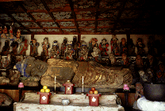
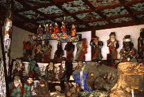
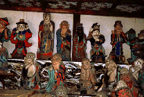
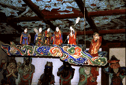
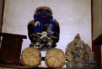
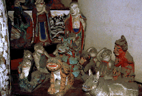

吉祥寺/香川県三野町
  
小さなお堂の扉を開けた瞬間、ぶったまげた。こんなに色鮮やかなものだったとは。 中央の釈迦涅槃像を中心に色とりどりのヒトや動物や神様などが配置されている。濃密な空間だ。 しかもみんな表情がゆるーい。お釈迦さんの入滅という暗い主題など吹っ飛ばしてくれる程、明るくのんびりとしている。ま、ヒトが死ぬ時って案外こんな感じなのかもね。
  
1998.12
珍寺大道場 HOME